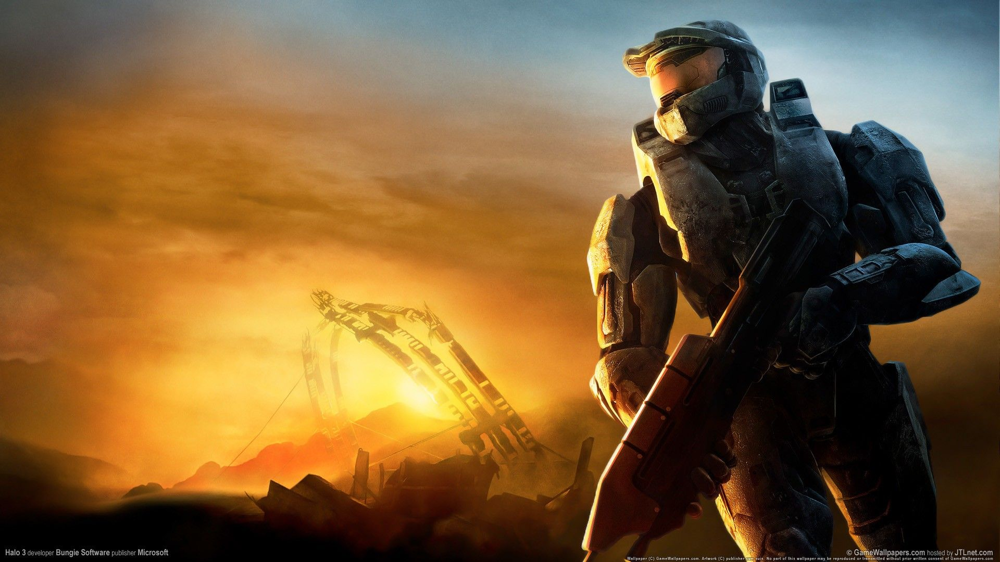

-¿Que es halo? es una franquicia de videojuegos de ciencia ficción creada y desarrollada por Bungie Studios hasta Halo Reach, y gestionada ahora por 343 Industries, propiedad de Xbox Game Studios. La serie se centra en una guerra interestelar entre la humanidad y una alianza teocrática de alienígenas conocidos como Covenant. -¿Quien lo creo? En el año 2001 Bungie creó, casi sin quererlo, una saga que ha hecho historia. Cuando hablamos de juegos o personajes referentes del sector, es inevitable no hacer referencia a Halo y al Jefe Maestro. Con la llegada a las tiendas de la esperadísima cuarta entrega de la franquicia -el juego más caro de la historia de Microsoft-, esta vez con 343 Industries al frente, las vivencias del soldado Spartan-117 y compañía pretenden seguir dejando una huella imborrable en el ocio electrónico. Y ya de paso abrir camino para Halo 7,8 y 9..Porque no sólo tenemos delante una saga que revolucionó por completo el género de los FPS y el multijugador online. Su argumento es casi tan rico y extenso como la galaxia de la que hace gala en cada título. Así pues, si hasta ahora no habéis podido aun disfrutar del conflicto interestelar entre los humanos y el Covenant, o simplemente queréis refrescaros la memoria, os hemos preparado un completo repaso a los acontecimientos más importantes de toda la serie. Para que estéis al día y ningún Grunt os deje fuera de combate.
En el año 2552, con la humanidad al borde de la desaparición, la UNSC (United Nations Security Council) elabora en el planeta Reach un proyecto militar secreto llamado “Spartans-II” para crear soldados mediante ingeniería genética y abordar una nave de los Covenant (una confederación de diversas razas alienígenas, unidas por la religión que tienen a la humanidad como principal antagonista) para descubrir su mundo de origen. Dos días antes de la misión, son los Covenant quienes aniquilan a la colonia humana. Pero aun queda una esperanza. El “Pillar of Autumn” , el crucero donde todo comenzó. La nave, tripulada por el Capitán Jacob Keyes escapa con el último Spartan con vida; John-117 –Jefe Maestro para los amigos- y con Cortana, una IA que, si cayera en las manos de los Covenant, haría que éstos tuvieran acceso a la información que la humanidad ha tratado de mantener a salvo durante mucho tiempo, como la ubicación de la tierra. En la huida, la tripulación se topa con “Halo”, una enorme instalación con forma de anillo de 10.000 kilómetros de diámetro. Pero los Covenant habían seguido al “Pillar of Autumn” y en el momento en el que la nave se disponía a aterrizar, atacaron la nave. El Jefe Maestro y Cortana escaparon en una cápsula para luchar en el campo de batalla y salvar así a la humanidad, junto con Keyes, quien también sobrevive al ataque. Tras pasar dificultades de todo tipo por el nuevo planeta, incluido un mítico paseo por la conocida “Biblioteca”, el Jefe Maestro descubre que los Covenant han liberado de manera accidental a los Flood, unos parásitos extraterrestres capaces de expandirse e infectar a cualquier forma de vida, quienes además han acabado con la vida de Keyes. Para evitar su propagación, el Jefe debe recuperar el Índice, un dispositivo que activará Halo para evitar que los Flood se extiendan por otros planetas
